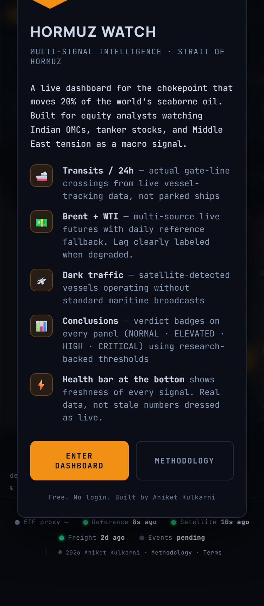
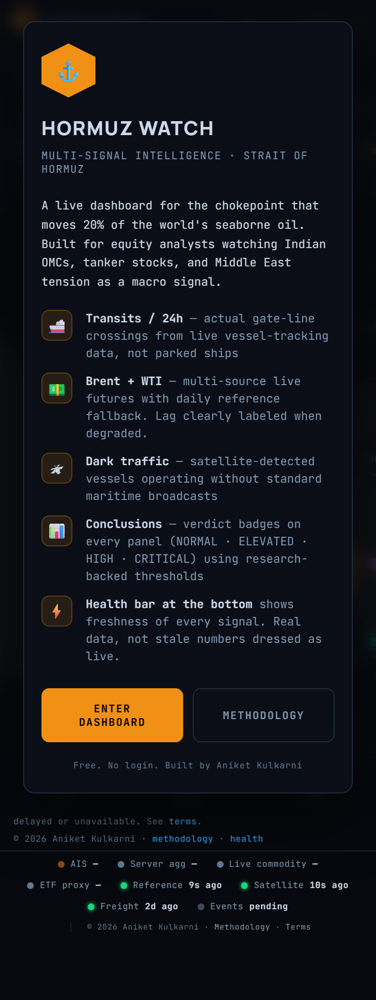
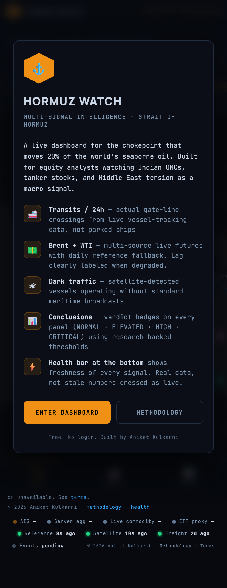

Live URL https://hormuz-watch-2.pages.dev/ · tested 2026-05-21 at three iPhone viewports (375 / 390 / 414 px). Headless Chromium with mobile UA + touch. Method: Playwright walks the DOM, measures every element's bounding box, flags overlaps, off-screen elements, tiny touch targets, illegible fonts.
The top signal bar contains ~5 tiles (BDTI, Brent, Transits, Dark, India). Each tile uses flex:1 with hardcoded inner content widths (number + label + tag). On 375px iPhone SE, the row sums to ~600px — last 2-3 tiles' content is clipped by overflow:hidden on .signal-bar. User sees the first 2 tiles only; the rest are silently invisible. Audit caught: India via Hormuz tile at right=596px on a 414vw → 182px off-screen.
Tiles 3-5 clipped invisibly. User can't read them.
Swipe left/right · snaps to each tile. All 5 readable. ← try it →
2×2 + full-row 5th. All visible, no swipe needed. Costs 1 extra row of header height (~84px → 126px).
Each tile = one row. Costs 5 × 32 = 160px header height. Most info-dense per row. Eats above-the-fold real estate.
Apple HIG recommends min 44×44 px touch targets. iOS Safari does its own enlargement to 28×28 but Android does not. The dashboard's "Dark / Satellite / Nautical" map-style buttons render at 60–81 × 27 px — 5px below the Android minimum, 17px below Apple HIG. Leaflet's built-in +/− zoom controls are 30×30 (acceptable). The Leaflet "Leaflet" attribution link is 34×9 (legal text, intentionally small, ignore).
Height 27px — below 32px Android minimum
36px height clears Android baseline. ~30 sec CSS change.
Mobile WebKit will render 8px text but it's below the legible threshold on a typical phone DPI. WCAG 2.1 recommends 16px+ for body, 12px+ for secondary. Found six 8px sites: the header tagline "Strait of Hormuz · Multi-Signal Intelligence", "tap to close" tooltips, "CONNECTING" status, separator pipes, "Type · Capacity" mini-headers.
1. <span> "Strait of Hormuz · Multi-Signal Intelligence Tracker" → bump to 10px 2. <div> "tap to close" → bump to 10px 3. <span> "CONNECTING" (AIS status) → bump to 10px 4. <span> "|" (separator pipes) → bump to 10px (still small but legible) 5. <div> "Type · Capacity" (vessel-type headers) → bump to 10px 6. (1 more occurrence at same 8px) → bump to 10px
All six sites: change font-size:8px → font-size:10px. No layout impact (existing flex containers absorb the +2px).
Good news: mobile layout already has bottom-tab nav (body.tab-intel .rpanel{display:flex}). User taps "Intel" to see the analytics panel. This is fine — it's why the audit didn't flag rpanel overflow. The 23 right-panel cards all render full-width when active. Risk: user may not discover the Intel tab — most data is hidden until tapped. Suggestion: add a subtle "Intel ▸" prompt in the header on first load, or auto-switch to Intel tab if the user scrolls past the map.
Lower priority — works as designed, just discoverable-ness improvement.



Full-page screenshots from headless Chromium. Open them in a new tab to see signal-bar clipping at top + check tile rendering down the page.
Tell me which of these to ship (or all):
All fixes use existing CSS classes — no breaking changes. After approval I run the same headless mobile audit again and report PASS/FAIL on each viewport.